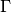
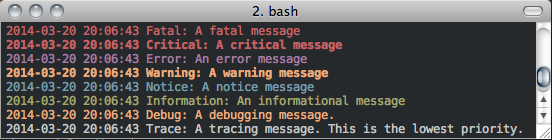

RoadRunner API Reference¶
This is the API Reference page for the module: roadrunner
The RoadRunner SBML Simulation Engine Python API, (c) 2009-2014 Endre Somogyi and Herbert Sauro
Configuration¶
Many of RoadRunner classes use a number of configration parameters. Most of these can be set using the Config class. The values stored in the Config class only determine the defaut values of parameters. Most methods let specify explicit values for parameters. For example, if one ran a time series simulation, they could specify various parameter via the optional SimulateOptions object:
import roadrunner
opt = roadrunner.SimulateOptions()
opt.relative = 1.3e-5
opt.absolute = 3e-12
opt.steps = 100
opt.duration = 1.1
r = roadrunner.RoadRunner('/Users/andy/test.xml')
r.simulate(opt)
If no SimulateOptions object is given, then the default configuration parameters are used. The Config class will look in the following locations for the config file, and will load the values from the first config file it finds. If it does not find a config file in one of the following locations, a default set of configuration parameters are used. The search locations of the config file are:
#1: the ROADRUNNER_CONFIG environment variable
#2: try the users’s home directory for roadrunner.conf, i.e.:
/Users/andy/roadrunner.conf
#3: try the users’s home directory for .roadrunner.conf, i.e.:
/Users/andy/.roadrunner.conf
#4: try the same directory as the roadrunner shared library, this will be the same directory as the python _roadrunner.pyd python extension module, i.e.:
/Users/andy/local/lib/roadrunner.conf
#5: try one directory up from the where the shared library or program is at, i.e.:
/Users/andy/local/roadrunner.conf
The conf file is just a plain text file of where each line may be key / value pair separated by a ”:”, i.e.
KEY_NAME : Value
Any line that does not match this format is ignored, and keys that are not found are also ignored. Therefore, any line that does not start with a word character is considered a comment.
All of the configuration managment functions are static method of the Config class, and all of the configuration keys are static attributes of the Config class, these are documented in the Configuration Functions section.
As all of the Config class methods are static, one never instantiates the Config class.
Configuration Functions¶
- static Config.setValue(key, value)¶
Set the value of a configuration key. The value must be either a string, integer, double or boolean. If one wanted to change the value of the default integrator tolerances, one would:
from roadrunner import Config Config.setValue(Config.SIMULATEOPTIONS_ABSOLUTE, 3.14e-12) Config.setValue(Config.SIMULATEOPTIONS_RELATIVE, 2.78e-5)
Or, other options may be set to Boolean or integer values. To enable an optimization features, or to set default simulation time steps:
Config.setValue(Config.LOADSBMLOPTIONS_OPTIMIZE_INSTRUCTION_SIMPLIFIER, True) Config.setValue(Config.SIMULATEOPTIONS_STEPS, 100)
- static Config.getConfigFilePath()¶
If roadrunner was able to find a configuration file on the file system, its full path is returned here. If no file was found, this returns a empty string.
- static Config.readConfigFile(path)¶
Read all of the values from a configuration file at the given path. This overrides any previously stored configuration. This allows users to have any number of configuration files and load them at any time. Say someone had to use Windows, and they had a file in thier C: drive, this would be loaded via:
Config.readConfigFile("C:/my_config_file.txt")
Note, the forward slash works on both Unix and Windows, using the forward slash eliminates the need to use a double back slash, “\\”.
- static Config.writeConfigFile(path)¶
Write all of the current configuration values to a file. This could be written to one of the default locations, or to any other location, and re-loaded at a later time.
- static Config.getString(key)¶
Get the value of the key as a string. This is mostly used internally in RoadRunner. As RoadRunner is written in C++ which is a statically rather than a dynamically typed language, it requires values to be returned with a concrete type, i.e. string, integer, double, etc...
The getString, getInt, getDouble methods may be useful in python to see what the current value of a parameter is.
- static Config.getInt(key)¶
Get the value of a key as an integer.
- static Config.getDouble(key)¶
Get the value of the key as a double.
Available Configuration Parameters¶
All of the configuration parameter keys are static attributes of the Config class and are listed here. The variable type of the parameter is listed after the key name.
- Config.LOADSBMLOPTIONS_CONSERVED_MOIETIES bool¶
perform conservation analysis.
This causes a re-ordering of the species, so results generated with this flag enabled can not be compared index wise to results generated otherwise.
Moiety conservation is only compatable with simple models which do NOT have any events or rules which define or alter any floating species, and which have simple constant stiochiometries.
- Config.LOADSBMLOPTIONS_RECOMPILE bool¶
Should the model be recompiled? The LLVM ModelGenerator maintins a hash table of currently running models. If this flag is NOT set, then the generator will look to see if there is already a running instance of the given model and use the generated code from that one.
If only a single instance of a model is run, there is no need to cache the models, and this can safetly be enabled, realizing some performance gains.
- Config.LOADSBMLOPTIONS_READ_ONLY bool¶
If this is set, then a read-only model is generated. A read-only model can be simulated, but no code is generated to set model values, i.e. parameters, amounts, values, etc...
It takes a finite amount of time to generate the model value setting functions, and if they are not needed, one may see some performance gains, especially in very large models.
- Config.LOADSBMLOPTIONS_MUTABLE_INITIAL_CONDITIONS bool¶
Generate accessor functions to allow changing of initial conditions.
- Config.LOADSBMLOPTIONS_OPTIMIZE_GVN bool¶
GVN - This pass performs global value numbering and redundant load elimination cotemporaneously.
- Config.LOADSBMLOPTIONS_OPTIMIZE_CFG_SIMPLIFICATION bool¶
CFGSimplification - Merge basic blocks, eliminate unreachable blocks, simplify terminator instructions, etc...
- Config.LOADSBMLOPTIONS_OPTIMIZE_INSTRUCTION_COMBINING bool¶
InstructionCombining - Combine instructions to form fewer, simple instructions. This pass does not modify the CFG, and has a tendency to make instructions dead, so a subsequent DCE pass is useful.
- Config.LOADSBMLOPTIONS_OPTIMIZE_DEAD_INST_ELIMINATION bool¶
DeadInstElimination - This pass quickly removes trivially dead instructions without modifying the CFG of the function. It is a BasicBlockPass, so it runs efficiently when queued next to other BasicBlockPass’s.
- Config.LOADSBMLOPTIONS_OPTIMIZE_DEAD_CODE_ELIMINATION bool¶
DeadCodeElimination - This pass is more powerful than DeadInstElimination, because it is worklist driven that can potentially revisit instructions when their other instructions become dead, to eliminate chains of dead computations.
- Config.LOADSBMLOPTIONS_OPTIMIZE_INSTRUCTION_SIMPLIFIER bool¶
InstructionSimplifier - Remove redundant instructions.
- Config.LOADSBMLOPTIONS_USE_MCJIT bool¶
Currently disabled.
Use the LLVM MCJIT JIT engine.
Defaults to false.
The MCJIT is the new LLVM JIT engine, it is not as well tested as the original JIT engine. Does NOT work on LLVM 3.1
- Config.SIMULATEOPTIONS_STEPS int¶
The number of steps at which the output is sampled. The samples are evenly spaced. When a simulation system calculates the data points to record, it will typically divide the duration by the number of time steps. Thus, for N steps, the output will have N+1 data rows.
- Config.SIMULATEOPTIONS_DURATION double¶
The duration of the simulation run, in the model’s units of time. Note, setting the duration automatically sets the end time and visa versa.
- Config.SIMULATEOPTIONS_ABSOLUTE double¶
The absolute error tolerance used by the integrator.
A number representing the absolute difference permitted for the integrator tolerance. Defaults to 1.000000e-10.
- Config.SIMULATEOPTIONS_RELATIVE double¶
The relative error tolerance used by the integrator.
A float-point number representing the relative difference permitted. Defaults to 1.000000e-05.
- Config.SIMULATEOPTIONS_STRUCTURED_RESULT bool¶
A boolean option to return a structured array from the RoadRunner.simulate method. Structured arrays contain column names and other data. A structured array needs to be converted into regular arrays before they can be used in numpy functions.
- Config.SIMULATEOPTIONS_STIFF bool¶
Is the model a stiff system? setting this to stiff causes RoadRunner to load a stiff solver which could potentially be extremly slow
- Config.SIMULATEOPTIONS_MULTI_STEP bool¶
The MULTI_STEP option tells the solver to take a series of internal steps and then return the solution at the point reached by that step.
In simulate, this option will likely be slower than normal mode, but may be useful to monitor solutions as they are integrated.
This is intended to be used in combination with the IntegratorListener. It this option is set, and there is a IntegratorListener set, RoadRunner::integrate will run the integrator in a series of internal steps, and the listner will by notified at each step.
Highly Experimental!!!
- Config.SIMULATEOPTIONS_INITIAL_TIMESTEP double¶
A user specified initial time step. If this is <= 0, the integrator will attempt to determine a safe initial time stpe.
Note, for each number of steps given to RoadRunner::simulate or RoadRunner::oneStep, the internal integrator may take many many steps to reach one of the external time steps. This value specifies an initial value for the internal integrator time step.
- Config.SIMULATEOPTIONS_MINIMUM_TIMESTEP double¶
Specfify The Minimum Time Step That The Internal Integrator Will Use. Uses Integrator Estimated Value If <= 0.
- Config.SIMULATEOPTIONS_MAXIMUM_TIMSETEP double¶
Specify The Maximum Time Step Size That The Internaal Integrator Will Use. Uses Integrator Estimated Value If <= 0.
- Config.SIMULATEOPTIONS_MAXIMUM_NUM_STEPS int¶
Specify The Maximum Number Of Steps The Internal Integrator Will Use Before Reaching The User Specified Time Span. Uses The Integrator Default Value If <= 0.
- Config.ROADRUNNER_DISABLE_PYTHON_DYNAMIC_PROPERTIES,
RoadRunner by default dynamically generates accessor properties for all sbml symbol names on the model object when it is retrieved in Python. This feature is very nice for interactive use, but can slow things down. If this feature is not needed, it can be disabled here.
- Config.ROADRUNNER_DISABLE_WARNINGS,
disable SBML conserved moiety warnings.
The Main RoadRunner Class¶
- class roadrunner.RoadRunner¶
The main RoadRunner class. Its objects, i.e. rr = RoadRunner() perform the libRoaRunner functions, i.e. rr.simulate().
- RoadRunner.__init__(uriOrSBML = "", options = None)¶
Creates a new RoadRunner object. If the first argument is specified, it should be a string containing either the contents of an sbml document, or a formated URI specifying the path or location of a sbml document.
If options is given, it shhould be a LoadSBMLOptions object.
If no arguments are given, a document may be loaded at any future time using the load method.
Parameters: - uriOrSBML – a URI, local path or sbml document contents.
- options – (LoadSBMLOptions) an options object specifying how the sbml document should be loaded
- RoadRunner.createSelection(str)¶
Creates a new SelectionRecord for the given selection string.
- RoadRunner.getSteadyStateValues(*args)¶
Returns a vector of steady state values for the floating species. The order of species in the vector is indicated by the order of species Ids in a call to getFloatingSpeciesIds()
- RoadRunner.getCC(variable, parameter)¶
Returns a scaled control coefficient with respect to a global parameter.
For example:
rr.getCC ('J1', 'Vmax') rr.getCC ('S1', 'Xo') rr.getCC ('S2', 'Km')
The first returns a flux control coefficient with respect to flux J1. The second and third return concentration control coefficients with respect to speies S1 and S2.
Parameters: - variable – The id of a dependent variable of the coefficient, for example a flux or species concentration.
- parameter – The id of the independent parameter, for example a kinetic constant or boundary species
Returns: the value of the control coefficeint returned to the caller.
Return type: double
- RoadRunner.getuCC(variableId, parameterId)¶
Get unscaled control coefficient with respect to a global parameter.
Parameters: - variableId – must be either a reaction or floating species.
- parameterId – must be eithe a global parameter, boundary species, or conserved sum.
- RoadRunner.getCompiler()¶
Return the compiler used to build the ExecutableModel.
- RoadRunner.getConfigurationXML()¶
recurse through all of the child configurable objects that this class ownes and build an assemble all of thier configuration parameters into a single xml document which is returned as a string.
The value of this result depends on what child objects are presently loaded.
- RoadRunner.getConservationMatrix()¶
Returns a conservation matrix  which is a matrix where is the number of conservation laws and
 the number of species.
the number of species.
- static RoadRunner.getCopyright()¶
Returns the copyright string
- RoadRunner.getEE(reactionId, parameterId, steadyState=True)¶
Retrieve a single elasticity coefficient with respect to a global parameter.
For example:
x = rr.getEE ('J1', 'Vmax')
Parameters: - variable (str) – The dependent variable of the coefficient, for example a flux or species concentration.
- parameter (str) – The independent parameter, for example a kinetic constant or boundary species
- steadyState (Boolean) – should the steady state value be computed.
- RoadRunner.getuEE(reactionId, parameterId)¶
Get unscaled elasticity coefficient with respect to a global parameter or species.
- RoadRunner.getEigenvalueIds()¶
returns a list of floating species ids with thier names prefixed with eigen_. For example, if the model contained the floating species S1 and S2, this would return a list containing [“eigen_S1”, “eigen_S2”].
- RoadRunner.getEigenvalues(m)¶
Returns eigenvalues, first column real part, second column imaginary part.
Return type: numpy.ndarray
- static RoadRunner.getExtendedVersionInfo()¶
getVersion plus info about dependent libs versions.
- RoadRunner.getFloatingSpeciesAmountIds()¶
Returns a list of the floating species Ids, but with theIids surrounded by square brackets, i.e. ‘S1’ -> ‘[S1]’
- RoadRunner.getFullJacobian()¶
Compute the full Jacobian at the current operating point.
This is the Jacobian of ONLY the floating species.
- RoadRunner.getFullyReorderedStoichiometryMatrix()¶
Returns the full reordered stoichiometry matrix for the currently loaded model. The rows will coresponds to the order of species in the call to getFloatinSpeciesIds(), the colunms will corresponds to the order of reactions in the call to getReactionIds().
- RoadRunner.getInfo()¶
return info about the current state of the object
Return type: str
- RoadRunner.getInstanceCount()¶
Number of currently running RoadRunner instances.
- RoadRunner.getInstanceID()¶
When there are multiple instances of RoadRunner, this is the instance id.
- RoadRunner.getIntegrator()¶
get the integrator which is currently being used to time evolve the system.
- RoadRunner.getL0Matrix()¶
Returns the L0 matrix for the current model. The L0 matrix is an (m-r) by r matrix that expresses the dependent reaction rates in terms of the indepdent rates. m is the number of floating species and r is the rank of the stoichiometry matrix.
Return type: numpy.ndarray
- RoadRunner.getLinkMatrix()¶
Returns the full link matrix, L for the current model. The Link matrix is an m by r matrix where m is the number of floating species and r the rank of the stichiometric matrix, N.
Return type: numpy.ndarray
- RoadRunner.getNrMatrix()¶
Returns the reduced stoichiometry matrix,
 , which wil have only r rows where r is the rank of
the full stoichiometry matrix. The matrix will be reordered such that the rows of are independent.
, which wil have only r rows where r is the rank of
the full stoichiometry matrix. The matrix will be reordered such that the rows of are independent.Return type: numpy.ndarray
- static RoadRunner.getParamPromotedSBML(*args)¶
Takes an sbml document (in textual form) and changes all of the local parameters to be global parameters.
Parameters: sbml (str) – the contents of an sbml document Return type: str
- RoadRunner.getReducedJacobian()¶
Returns the reduced Jacobian for the independent species. This matrix will be non-singular for models that include moiety-concerved cycles.
Return type: numpy.ndarray
- RoadRunner.getReorderedStoichiometryMatrix()¶
Returns the reordered stoichiometry matrix where the tops rows represent the independent species of which there will be rank (N) and the bottom rows the dependent species.
Return type: numpy.ndarray
- RoadRunner.getCurrentSBML()¶
Returns the current state of the model in the form of an sbml string.
That is the SBML will reflect the current state of the model and not the orginal SBML that was loaded into roadRunner.
Return type: str
- RoadRunner.getSBML()¶
Returns the original sbml model that was loaded into roadrunner.
Return type: str
- RoadRunner.getScaledConcentrationControlCoefficientMatrix()¶
Returns the m by n matrix of scaled conentration control coefficients where m is the number of floating species and n the number of reactiohs.
Return type: numpy.ndarray
- RoadRunner.getScaledFloatingSpeciesElasticity(reactionId, speciesId)¶
Returns the scaled elasticity for a given reaction and given species.
Parameters: - reactionId (str) – the sbml id of a reaction.
- speciesId (str) – the sbml id of a species.
Return type: double
- RoadRunner.getScaledFluxControlCoefficientMatrix()¶
Returns the n by n matrix of scaled flux control coefficients where n is the number of reactions.
Return type: numpy.ndarray
- RoadRunner.getScaledElasticityMatrix()¶
Returns the scaled elasticity matrix at the current operating point.
Return type: numpy.ndarray
- RoadRunner.getValue(sel)¶
Returns the value for a given selection.
Parameters: sel (str or SelectionRecord) – a selection that is either a string or a SelectionRecord that was obtained from createSelection
- RoadRunner.getSelectedValues()¶
returns the values selected with SimulateOptions for the current model time / timestep
Return type: numpy.ndarray
- RoadRunner.getSimulationResult()¶
get the simulation result in case one forgot to hold on to the simulate return value.
Return type: numpy.ndarray
- RoadRunner.selections¶
- RoadRunner.createSelection(sel)
Create a new selection based on a selection string
Return type: roadrunner.SelectionRecord
- RoadRunner.getUnscaledConcentrationControlCoefficientMatrix()¶
Returns the unscaled concentration control coefficent matrix.
- RoadRunner.getUnscaledElasticityMatrix()¶
Returns the unscaled species elasticity matrix at the current operating point.
- RoadRunner.getUnscaledFluxControlCoefficientMatrix()¶
Returns the unscaled flux control coefficient matrix.
- RoadRunner.getUnscaledSpeciesElasticity(reactionIndx, speciesIndx)¶
Get a single species elasticity value. IMPORTANT: Assumes that the reaction rates have been precomputed at the operating point !!
Parameters: - reactionIndx (int) – index of reactionl
- speciesIndx (int) – index of species.
- static RoadRunner.__version__()¶
Returns the current version of the roadRunner library.
- static RoadRunner.getlibSBMLVersion()¶
Returns theversion of the libSBML library that is currently being used.
- RoadRunner.isModelLoaded()¶
Return True if model was loaded; False otherwise
- RoadRunner.load(uriOrDocument)¶
Loads an sbml document, given a string for file path, uri, or contents.
This method also accepts http uri for remote files, however this feature is currently limited to the Mac version, plan on enabling http loading of SBML documents on Windows and Linux shortly.
Some examples of loading files on Mac or Linux:
>>> r.load("myfile.xml") # load a file from the current dirctory >>> r.load("/Users/Fred/myfile.xml") # absolute path >>> r.load("http://sbml.org/example_system.xml") # remote file
Or on Windows:
>>> r.load("myfile.xml") # load a file from the current dirctory >>> r.load("file://localhost/c:/Users/Fred/myfile.xml") # using a uri
- One may also load the contents of a document::
>>> myfile = open("myfile.xml, "r") >>> contents = file.read() >>> r.load(contents)
In future version, we will also support loading directly from a libSBML Dcoument object.
Parameters: uriOrDocument – A string which may be a local path, URI or contents of an SBML document.
- RoadRunner.model None¶
Get the currently loaded model. The model object contains the enite state of the SBML model.
- RoadRunner.oneStep(startTime, stepSize)¶
Carry out a one step integration of the model. The method takes two arguments, the current time and the step size to us in the integration. The method returns the new time which will be currentTime + StepSize:
newTime = rr.oneStep (10, 0.5)
- RoadRunner.reset()¶
This method resets all the floating species concentrations to their initial values.
- RoadRunner.setConfigurationXML(*args)¶
given a xml document, which should have been returned from getConfigurationXML, this method recurses though all the child configurable elements and sets thier configuration to the values specified in the document.
Parameters: xml (str) – the contents of an xml document.
- RoadRunner.conservedMoietyAnalysis¶
Enables / Disables conserved moiety analysis (boolean).
If this is enabled, the sbml document (either current, or one about to be loaded) is converted using the ConservedMoietyConverter. All of the linearly dependent species are replaced with assignment rules and a new set of conserved moeity parameters are introduced.
- RoadRunner.simulate(*args)¶
Simulate the current SBML model.
There are a number of ways to call simulate.
- With no arguments. In this case, the current set of SimulateOptions will be used for the simulation. The current set may be changed either directly via setSimulateOptions() or with one of the two alternate ways of calling simulate.
- 2: With single SimulateOptions argument. In this case, all of the settings
- in the given options are copied and will be used for the current and future simulations.
- 3: With the three positions arguments, timeStart, timeEnd, steps. In this case
- these three values are copied and will be used for the current and future simulations.
The options given in the 2nd and 3rd forms will remain in effect until changed. So, if one calls:
rr.simulate (0, 3, 100)
The start time of 0, end time of 3 and steps of 100 will remain in effect, so that if this is followed by a call to:
rr.simulate()
This simulation will use the previous values.
Returns: a numpy array with each selected output timeseries being a column vector, and the 0’th column is the simulation time. Return type: numpy.ndarray
- RoadRunner.simulateOptions None¶
Get the SimulateOptions object where simulation options may be set.
- roadrunner.RoadRunner_getCopyright()¶
Returns the copyright string
- roadrunner.RoadRunner_getExtendedVersionInfo()¶
getVersion plus info about dependent libs versions.
- roadrunner.RoadRunner_getParamPromotedSBML(*args)¶
Takes an sbml document (in textual form) and changes all of the local parameters to be global parameters.
Parameters: sbml (str) – the contents of an sbml document Return type: str
- RoadRunner.evalModel()¶
Evaluates the current model, that is it updates the rates of change and any assignments in the model. It does not carry out an integration step.
Returns: Returns true if successful
Steady State Sections¶
- RoadRunner.steadyStateSelections¶
A list of SelectionRecords which determine what values are used for a steady state calculation. This list may be set by assigning a list of valid selection symbols:
r.steadyStateSelections = ['S1', '[S2]', 'P1']
- RoadRunner.steadyState()¶
Attempt to evaluate the steady state for the model. The method returns a value that indicates how close the solution is to the steady state. The smaller the value the better. Values less than 1E-6 usually indicate a steady state has been found. If necessary the method can be called a second time to improve the solution.
Returns: the sum of squares of the steady state solution. Return type: double
- RoadRunner.getSteadyStateValues()
Performs a steady state calculation (evolves the system to a steady state), then calculates and returns the set of values specifed by the steady state selections.
Returns: a numpy array corresponding to the values specified by steadyStateSelections Return type: numpy.ndarray
Controlling Simulation Settings¶
- class roadrunner.SimulateOptions(*args)¶
The SimulateOptions object allows tuning a variety of simulation and integration options such as tolerances and time step size.
This is the full set of options that determines how RoadRunner performs a simulation of an SBML model.
This is a superset of the values stored in a SBML test suite settings file, the documentation of the fields which correspond to an SBML test suite settings was taken from http://sbml.org
This object can be read from a SBML test suite options file by using a file name in the constructor.
Parameters: sbmlSettingFilePath – (optional) if this is given, the settings are read from this settings file, if not, the default values are set.
- SimulateOptions.integratorFlags¶
A bitfield which may contain the following options. In python these options are also available as separate properties which set the integratorFlags bitfield.
- SimulateOptions.STIFF¶
Use the stiff (implicit) integrator. Defaults to off.
- SimulateOptions.MULTI_STEP¶
- Experimental *
Perform a multi-step simulation. In multi-step simulation, one may monitor the variable time stepping via the IntegratorListener events system.
- SimulateOptions.absolute¶
A number representing the absolute difference permitted for the integrator tolerance.
- SimulateOptions.amounts¶
A list of the variable whose output in the results file is in amount (not concentration) units. This list of variables must be a subset of the names listed in variables.
- SimulateOptions.concentrations¶
A list of the variable whose output in the results file is in concentration (not amount) units. This list of variables must be a subset of the names listed in variables.
- SimulateOptions.duration¶
The duration of the simulation run, in the model’s units of time. Note, setting the duration automatically sets the end time and visa versa.
- SimulateOptions.end¶
The simulation end time. Note, setting the end time automatically sets the duration accordingly and visa versa.
- SimulateOptions.flags¶
can be set to ResetModel so that the model is reset to its initial state when the simulation is run.
- SimulateOptions.relative¶
A float-point number representing the relative difference permitted. Defaults 0.0001
- SimulateOptions.resetModel¶
Causes the model to be reset to the original conditions specified in the SBML when the simulation is run.
- SimulateOptions.start¶
The start time of the simulation time-series data. Often this is 0, but not necessarily.
- SimulateOptions.steps¶
The number of steps at which the output is sampled. The samples are evenly spaced. When a simulation system calculates the data points to record, it will typically divide the duration by the number of time steps. Thus, for N steps, the output will have N+1 data rows.
- SimulateOptions.stiff¶
Use the stiff integrator. Only use this if the model is stiff and causes issues with the regular integrator. The stiff integrator is slower than the conventional integrator.
- SimulateOptions.multiStep¶
Perform a multi step integration.
- Experimental *
Perform a multi-step simulation. In multi-step simulation, one may monitor the variable time stepping via the IntegratorListener events system.
- SimulateOptions.variables¶
The variables (in addition to time) whose values will be saved in the result. These are SBML model id’s. Order is significant, as this determines the order of the columns in the result matrix.
Important: if a symbol in this list refers to a species in the model, then that symbol should also be listed in either the amount or concentration lists below. If a species symbol is listed in variables, but is not listed in either amounts or concentrations, then it defaults to an amount value.
The ordering of the symbols in variable is what determines the output ordering. The order of symbols in either amounts or concentrations do not effect the output ordering.
NOTE:If a listed variable has two underscores in it (‘__’), that variable is actually present only in a submodel of the main model, from the Hierarchical Model Composition package, in the format submodelID__variableID. If the model is flattened, the variable will appear automatically.
- SimulateOptions.initialTimeStep¶
A user specified initial time step. If this is <= 0, the integrator will attempt to determine a safe initial time step.
Note, for each number of steps given to RoadRunner.simulate or RoadRunner.integrate the internal integrator may take many many steps to reach one of the external time steps. This value specifies an initial value for the internal integrator time step.
- SimulateOptions.minimumTimeStep¶
Specify the minimum time step that the internal integrator will use. Uses integrator estimated value if <= 0.
- SimulateOptions.maximumTimeStep¶
Specify the maximum time step size that the internal integrator will use. Uses integrator estimated value if <= 0.
- SimulateOptions.maximumNumSteps¶
Specify the maximum number of steps the internal integrator will use before reaching the user specified time span. Uses the integrator default value if <= 0.
SBML Compile Options¶
- class roadrunner.LoadSBMLOptions¶
The LoadSBMLOptions object allows tuning a variety of SBML loading and compilations options.
This object can be passed in as the second, optional argument of the RoadRunner.__init__() constructor, or the RoadRunner.load() method.
- LoadSBMLOptions.conservedMoieties bool¶
perform conservation analysis.
This causes a re-ordering of the species, so results generated with this flag enabled can not be compared index wise to results generated otherwise.
Moiety conservation is only compatable with simple models which do NOT have any events or rules which define or alter any floating species, and which have simple constant stiochiometries.
- LoadSBMLOptions.mutableInitialConditions bool¶
Generate accessor functions to allow changing of initial conditions.
- LoadSBMLOptions.noDefaultSelections bool¶
Do not create a default selection list when the model is loaded.
- LoadSBMLOptions.readOnly bool¶
Should the model be recompiled? The LLVM ModelGenerator maintins a hash table of currently running models. If this flag is NOT set, then the generator will look to see if there is already a running instance of the given model and use the generated code from that one.
If only a single instance of a model is run, there is no need to cache the models, and this can safetly be enabled, realizing some performance gains.
- LoadSBMLOptions.recompile bool¶
If this is set, then a read-only model is generated. A read-only model can be simulated, but no code is generated to set model values, i.e. parameters, amounts, values, etc...
It takes a finite amount of time to generate the model value setting functions, and if they are not needed, one may see some performance gains, especially in very large models.
Accessing the SBML Model Variables¶
All of the SBML model variables are accessed via the RoadRunner.model object. This is an instance of the ExecutableModel class described here. One always access the model object that belongs to the top RoadRunner object, i.e. r.model, where r is an instance of the RoadRunner class.
The ExecutableModel class also implements the Python dictionary protocol, so that it can be used as a dictionary. The dictionary keys are all of the symbols specified in the original model as well as a number of selection strings described in the Selections section.
- ExecutableModel.keys()¶
Get a list of all the keys that this model has. This is a very good way of looking at all the available symbols and selection strings.
- ExecutableModel.items()¶
Get a list of key / value pairs of all the selections / values in this model.
- ExecutableModel.__getitem__()¶
Implements the python [] indexing operator, so the model values can be accessed like:
>>> r.model["S1"] 0.0
- ExecutableModel.__setitem__()¶
Implements the python [] indexing operator for setting values:
>>> r.model["S1"] = 12.3
Note, some keys are read only such as values defined by rules, or calculated values such as species amount rates or reaction rates.
Floating Species¶
- ExecutableModel.getNumFloatingSpecies()¶
Returns the number of floating species in the model.
- ExecutableModel.getFloatingSpeciesIds()¶
Return a list of floating species sbml ids.
- ExecutableModel.getFloatingSpeciesAmountRates([index])¶
Return a vector of the amount rate of change of the floating species.
The units of amount rates is amount / time.
Parameters: index (numpy.ndarray) – (optional) an index array indicating which items to return. Returns: an array of the rates of change of the floating species amounts. Return type: numpy.ndarray
- ExecutableModel.getFloatingSpeciesAmounts([index])¶
Get the list of floating species amounts. If no arguments are given, this returns all floating species amounts.
Parameters: index – an optional array of desired floating species indices. i.e. if this model has 4 floating species and we want the amounts for the last and first, we would use [3,0] for the index array. get all the amounts:
>>> e.getFloatingSpeciesAmounts() [15,2,3,20]
get amounts 3 and 0:
>>> getFloatingSpeciesAmounts([3,0]) [10,15]
- ExecutableModel.setFloatingSpeciesAmounts([index], values)¶
Use this to set the entire set of floating species amounts in one call. The order of species is given by the order of Ids returned by getFloatingSpeciesIds()
Parameters: - index (numpy.ndarray) – (optional) an index array indicating which items to set, or if no index array is given, the first param should be an array of all the values to set.
- values (numpy.ndarray) – the values to set.
- ExecutableModel.setFloatingSpeciesConcentrations([index], values)¶
Use this to set the entire set of floating species concentrations in one call. The order of species is given by the order of Ids returned by getFloatingSpeciesIds()
Parameters: - index (numpy.ndarray) – (optional) an index array indicating which items to set, or if no index array is given, the first param should be an array of all the values to set.
- values (numpy.ndarray) – the values to set.
- ExecutableModel.getFloatingSpeciesConcentrations([index])¶
Returns a vector of floating species concentrations. The order of species is given by the order of Ids returned by getFloatingSpeciesIds()
Parameters: index (numpy.ndarray) – (optional) an index array indicating which items to return. Returns: an array of floating species concentrations. Return type: numpy.ndarray
- ExecutableModel.getFloatingSpeciesInitAmountIds()¶
get a list of the floating species amount initial amount selection symbols.
- ExecutableModel.getFloatingSpeciesInitConcentrationIds()¶
get a list of the floating species amount initial concentration selection symbols.
- ExecutableModel.getFloatingSpeciesInitConcentrations([index])¶
Returns a vector of floating species initial concentrations. The order of species is given by the order of Ids returned by getFloatingSpeciesInitialConcentrationIds()
Parameters: index (numpy.ndarray) – (optional) an index array indicating which items to return. Returns: an array of floating species initial concentrations. Return type: numpy.ndarray
- ExecutableModel.setFloatingSpeciesInitAmounts([index], values)¶
Returns a vector of floating species initial amounts. The order of species is given by the order of Ids returned by getFloatingSpeciesInitialAmountIds()
Parameters: index (numpy.ndarray) – (optional) an index array indicating which items to return. Returns: an array of floating species initial amounts. Return type: numpy.ndarray
- ExecutableModel.setFloatingSpeciesInitConcentrations([index], values)¶
Set the entire set of floating species initial concentrations in one call. The order of species is given by the order of Ids returned by getFloatingSpeciesInitialConcentrationIds()
Parameters: - index (numpy.ndarray) – (optional) an index array indicating which items to set, or if no index array is given, the first param should be an array of all the values to set.
- values (numpy.ndarray) – the values to set.
Boundary Species¶
- ExecutableModel.getBoundarySpeciesAmounts([index])¶
Returns a vector of boundary species amounts. The order of species is given by the order of Ids returned by getBoundarySpeciesIds()
Parameters: index (numpy.ndarray) – (optional) an index array indicating which items to return. Returns: an array of the boundary species amounts. Return type: numpy.ndarray. given by the order of Ids returned by getBoundarySpeciesIds()
Parameters: index (numpy.ndarray) – (optional) an index array indicating which items to return. Returns: an array of the boundary species amounts. Return type: numpy.ndarray.
- ExecutableModel.getBoundarySpeciesConcentrations([index])¶
Returns a vector of boundary species concentrations. The order of species is given by the order of Ids returned by getBoundarySpeciesIds()
Parameters: index (numpy.ndarray) – (optional) an index array indicating which items to return. Returns: an array of the boundary species concentrations. Return type: numpy.ndarray. given by the order of Ids returned by getBoundarySpeciesIds()
Parameters: index (numpy.ndarray) – (optional) an index array indicating which items to return. Returns: an array of the boundary species concentrations. Return type: numpy.ndarray.
- ExecutableModel.getBoundarySpeciesIds()¶
Returns a vector of boundary species Ids.
Parameters: index (numpy.ndarray) – (optional) an index array indicating which items to return. Returns: a list of boundary species ids.
- ExecutableModel.getNumBoundarySpecies()¶
Returns the number of boundary species in the model.
- ExecutableModel.setBoundarySpeciesConcentrations([index], values)¶
Use this to set the entire set of boundary species concentrations in one call. The order of species is given by the order of Ids returned by getBoundarySpeciesIds()
Parameters: - index (numpy.ndarray) – (optional) an index array indicating which items to set, or if no index array is given, the first param should be an array of all the values to set.
- values (numpy.ndarray) – the values to set.
Compartments¶
- ExecutableModel.getCompartmentIds([index])¶
Returns a vector of compartment identifier symbols.
Parameters: index (None or numpy.ndarray) – A array of compartment indices indicating which compartment ids to return. Returns: a list of compartment ids.
- ExecutableModel.getCompartmentVolumes([index])¶
Returns a vector of compartment volumes. The order of volumes is given by the order of Ids returned by getCompartmentIds()
Parameters: index (numpy.ndarray) – (optional) an index array indicating which items to return. Returns: an array of compartment volumes. Return type: numpy.ndarray.
- ExecutableModel.getNumCompartments()¶
Returns the number of compartments in the model.
Return type: int
- ExecutableModel.setCompartmentVolumes([index], values)¶
Sets a vector of compartment volumes.
If the index vector is not give, then the values vector treated as a vector of all compartment volumes to set. If index is given, then values should have the same length as index.
Parameters: - index (numpy.ndarray) – (optional) an index array indicating which items to set, or if no index array is given, the first param should be an array of all the values to set.
- values (numpy.ndarray) – the values to set.
Global Parameters¶
- ExecutableModel.getGlobalParameterValues([index])¶
Return a vector of global parameter values. The order of species is given by the order of Ids returned by getGlobalParameterIds()
Parameters: index (numpy.ndarray) – (optional) an index array indicating which items to return. Returns: an array of global parameter values. Return type: numpy.ndarray.
- ExecutableModel.getNumGlobalParameters()¶
Returns the number of global parameters in the model.
- ExecutableModel.setGlobalParameterValues([index], values)¶
Use this to set the entire set of global parameters in one call. The order of parameters is given by the order of Ids returned by getGlobalParameterIds()
Parameters: - index (numpy.ndarray) – (optional) an index array indicating which items to set, or if no index array is given, the first param should be an array of all the values to set.
- values (numpy.ndarray) – the values to set.
Reactions¶
- ExecutableModel.getNumReactions()¶
Returns the number of reactions in the model.
- ExecutableModel.getReactionIds()¶
Returns a vector of reaction Ids.
Parameters: index (numpy.ndarray) – (optional) an index array indicating which items to return. Returns: a list of reaction ids.
- ExecutableModel.getReactionRates([index])¶
Returns a vector of reaction rates (reaction velocity) for the current state of the model. The order of reaction rates is given by the order of Ids returned by getReactionIds()
Parameters: index (numpy.ndarray) – (optional) an index array indicating which items to return. Returns: an array of reaction rates. Return type: numpy.ndarray
Stoichiometry¶
- ExecutableModel.getStoichiometry(speciesIndex, reactionIndex)¶
Returns the stochiometric coefficient for the given species index and reaction index.
Frequently one does not need the full stochiometrix matrix, particularly if the system is large and only a single coefficient is needed.
Parameters: - speciesIndex – a floating species index from getFloatingSpeciesIds()
- reactionIndex – a reaction index from getReactionIds()
- ExecutableModel.getStoichiometryMatrix()¶
Returns the current stoichiometry matrix, a matrix where
 is the
number of species which take place in reactions (floating species) and is the number of
reactions.
is the
number of species which take place in reactions (floating species) and is the number of
reactions.When the LLVM back end is used (default) this always returns the current state of the stochiometric coefficients, so if any of these are determined by any rule, this will return the current value.
Returns: an n by m numpy ndarray of the stoichiometric coefficients. Return type: numpy.ndarray
State Vector¶
- ExecutableModel.getStateVector([stateVector])¶
Returns a vector of all the variables that represent the state of the system. The state is considered all values which change with the dynamics of the model. This would include all species which are produced or consumed by reactions, and all variables which are defined by rate rules.
Variables such as global parameters, compartments, or boundary species which do not change with the model dynamics are considered parameters and are thus not part of the state.
In performance critical applications, the optional stateVector array should be provided where the output variables will be written to.
Parameters: stateVector (numpy.ndarray) – an optional numpy array where the state vector variables will be written. If no state vector array is given, a new one will be constructed and returned.
This should be the same length as the model state vector.
Return type: numpy.ndarray
- ExecutableModel.getStateVectorId(index)¶
Get the id (symbolic name) of a state vector item.
Parameters: index (int) – the index of the desired state vector item Return type: str
- ExecutableModel.getStateVectorIds()¶
Returns a list of all state vector ids
Return type: list
- ExecutableModel.getStateVectorRate(time[, stateVector][, stateVectorRate])¶
Calculates the rate of change of all state vector variables.
Note, the rate of change of species returned by this method is always in units of amount / time.
Parameters: - time (double) – the model time at which the calculation should be performed.
- numpy.ndarray – (optional) the model state at which the calculation should be performed. If this is not give, the current state is used.
- numpy.ndarray – (optional) an output array where the rates of change will be written to. If this is not given, a new array is allocated and returned.
Returns: an array of the rates of change of all state vector variables.
Return type: numpy.ndarray
Conserved Moieties¶
- ExecutableModel.getNumConservedMoieties()¶
Returns the number of conserved moieties in the model.
Return type: int
- ExecutableModel.getConservedMoietyIds([index])¶
Returns a vector of conserved moiety identifier symbols.
Parameters: index (None or numpy.ndarray) – A array of compartment indices indicating which compartment ids to return. Returns: a list of compartment ids.
- ExecutableModel.getConservedMoietyValues([index])¶
Returns a vector of conserved moiety volumes. The order of values is given by the order of Ids returned by getConservedMoietyIds()
Parameters: index (numpy.ndarray) – (optional) an index array indicating which items to return. Returns: an array of conserved moiety values. Return type: numpy.ndarray.
- ExecutableModel.setConservedMoietyValues([index], values)¶
Sets a vector of conserved moiety values.
Note This method currently only updates the conserved moiety values, it does not update the initial species condition from which the values were calculated.
If the index vector is not given, then the values vector treated as a vector of all values to set. If index is given, then values should have the same length as index.
Parameters: - index (numpy.ndarray) – (optional) an index array indicating which items to set, or if no index array is given, the first param should be an array of all the values to set.
- values (numpy.ndarray) – the values to set.
Misc¶
- ExecutableModel.evalInitialConditions()¶
calculate and apply the initial conditions specified in the model.
- ExecutableModel.getInfo()¶
get various info about the model.
- ExecutableModel.getModelName()¶
Get the model name specified in the SBML.
- ExecutableModel.getNumDependentSpecies()¶
Returns the number of dependent floating species in the model.
- ExecutableModel.getNumIndependentSpecies()¶
Returns the number of independent floating species in the model.
- ExecutableModel.getNumRules()¶
Returns the number of rules in the SBML model.
- ExecutableModel.getTime()¶
Get the model time. The model originally start at time t=0 and is advaced forward in time by the integrator. So, if one ran a simulation from time = 0 to time = 10, the model will then have it’s time = 10.
- ExecutableModel.reset()¶
Reset the floating species concentration to their initial conditions.
- ExecutableModel.setTime(time)¶
Set the model time variable.
Parameters: time – time the time value to set.
r.model.evalInitialConditions
Logging¶
RoadRunner has extensive logging system. Many internal methods will log extensive details (in full color) to either the clog (typically stderr) or a user specified file path. Internally, the RoadRunner logging system is currently implemented by the Poco (http://pocoproject) logging system.
Future versions will include a Logging Listener, so that the RoadRunner log will log messages to a user specified function.
The logging system is highly configurable, users have complete control over the color and format of the logging messages.
All methods of the Logger are static, they are available immediately upon loading the RoadRunner package.
If one wants to display logging at the lowest level (LOG_TRACE), where every logging message is displayed, one would run:
roadrunner.Logging.setLevel(roadrunner.Logging.LOG_TRACE)
Logging the following messages:
roadrunner.Logger.log(roadrunner.Logger.LOG_FATAL, "A fatal message")
roadrunner.Logger.log(roadrunner.Logger.LOG_CRITICAL, "A critical message")
roadrunner.Logger.log(roadrunner.Logger.LOG_ERROR, "An error message")
roadrunner.Logger.log(roadrunner.Logger.LOG_WARNING, "A warning message")
roadrunner.Logger.log(roadrunner.Logger.LOG_NOTICE, "A notice message")
roadrunner.Logger.log(roadrunner.Logger.LOG_INFORMATION, "An informational message")
roadrunner.Logger.log(roadrunner.Logger.LOG_DEBUG, "A debugging message.")
roadrunner.Logger.log(roadrunner.Logger.LOG_TRACE, "A tracing message. This is the lowest priority.")
will produce the following output:

If one wants different colors on the log, these can be set via:
rr.Logger.setProperty("traceColor", "red")
rr.Logger.setProperty("debugColor", "green")
The available color property names and values are listed below at the Logger.setProperty method.
Logging Levels¶
The Logger has the following logging levels:
- Logger.LOG_CURRENT¶
Use the current level – don’t change the level from what it is.
- Logger.LOG_FATAL¶
A fatal error. The application will most likely terminate. This is the highest priority.
- Logger.LOG_CRITICAL¶
A critical error. The application might not be able to continue running successfully.
- Logger.LOG_ERROR¶
An error. An operation did not complete successfully, but the application as a whole is not affected.
- Logger.LOG_WARNING¶
A warning. An operation completed with an unexpected result.
- Logger.LOG_NOTICE¶
A notice, which is an information with just a higher priority.
- Logger.LOG_INFORMATION¶
An informational message, usually denoting the successful completion of an operation.
- Logger.LOG_DEBUG¶
A debugging message.
- Logger.LOG_TRACE¶
A tracing message. This is the lowest priority.
Logging Methods¶
- static Logger.setLevel([level])¶
sets the logging level to one a value from Logger::Level
Parameters: level (int) – the level to set, defaults to LOG_CURRENT if none is specified.
- static Logger.getLevel()¶
get the current logging level.
- static Logger.disableLogging()¶
Suppresses all logging output
- static Logger.disableConsoleLogging()¶
stops logging to the console, but file logging may continue.
- static Logger.enableConsoleLogging(level)¶
turns on console logging (stderr) at the given level.
Parameters: level – A logging level, one of the above listed LOG_* levels.
- static Logger.enableFileLogging(fileName[, level])¶
turns on file logging to the given file as the given level.
Parameters: - fileName (str) – the path of a file to log to.
- level – (optional) the logging level, defaults to LOG_CURRENT.
- static Logger.disableFileLogging()¶
turns off file logging, but has no effect on console logging.
- static Logger.getCurrentLevelAsString()¶
get the textural form of the current logging level.
- static Logger.getFileName()¶
get the name of the currently used log file.
- static Logger.setFormattingPattern(format)¶
Internally, RoadRunner uses the Poco logging framework, so we can custom format logging output based on a formatting pattern string.
The format pattern is used as a template to format the message and is copied character by character except for the following special characters, which are replaced by the corresponding value.
An example pattern of “%Y-%m-%d %H:%M:%S %p: %t” set via:
roadrunner.Logger.setFormattingPattern("%Y-%m-%d %H:%M:%S %p: %t")
would produce the following output:
RoadRunner supports the following format specifiers. These were copied from the Poco documentation:
- %s - message source
- %t - message text
- %l - message priority level (1 .. 7)
- %p - message priority (Fatal, Critical, Error, Warning, Notice, Information, Debug, Trace)
- %q - abbreviated message priority (F, C, E, W, N, I, D, T)
- %P - message process identifier
- %T - message thread name
- %I - message thread identifier (numeric)
- %N - node or host name
- %U - message source file path (empty string if not set)
- %u - message source line number (0 if not set)
- %w - message date/time abbreviated weekday (Mon, Tue, ...)
- %W - message date/time full weekday (Monday, Tuesday, ...)
- %b - message date/time abbreviated month (Jan, Feb, ...)
- %B - message date/time full month (January, February, ...)
- %d - message date/time zero-padded day of month (01 .. 31)
- %e - message date/time day of month (1 .. 31)
- %f - message date/time space-padded day of month ( 1 .. 31)
- %m - message date/time zero-padded month (01 .. 12)
- %n - message date/time month (1 .. 12)
- %o - message date/time space-padded month ( 1 .. 12)
- %y - message date/time year without century (70)
- %Y - message date/time year with century (1970)
- %H - message date/time hour (00 .. 23)
- %h - message date/time hour (00 .. 12)
- %a - message date/time am/pm
- %A - message date/time AM/PM
- %M - message date/time minute (00 .. 59)
- %S - message date/time second (00 .. 59)
- %i - message date/time millisecond (000 .. 999)
- %c - message date/time centisecond (0 .. 9)
- %F - message date/time fractional seconds/microseconds (000000 - 999999)
- %z - time zone differential in ISO 8601 format (Z or +NN.NN)
- %Z - time zone differential in RFC format (GMT or +NNNN)
- %E - epoch time (UTC, seconds since midnight, January 1, 1970)
- %[name] - the value of the message parameter with the given name
- %% - percent sign
Parameters: format (str) – the logging format string. Must be formatted using the above specifiers.
- static Logger.getFormattingPattern()¶
get the currently set formatting pattern.
- static Logger.levelToString(level)¶
gets the textual form of a logging level Enum for a given value.
Parameters: level (int) – One of the above listed logging levels.
- static Logger.stringToLevel(s)¶
parses a string and returns a Logger::Level
Parameters: s (str) – the string to parse.
- static Logger.getColoredOutput()¶
check if we have colored logging enabled.
- static Logger.setColoredOutput(b)¶
enable / disable colored output
Parameters: b (boolean) – turn colored logging on or off
- static Logger.setProperty(name, value)¶
Set the color of the output logging messages.
In the future, we may add additional properties here.
The following properties are supported:
- enableColors: Enable or disable colors.
- traceColor: Specify color for trace messages.
- debugColor: Specify color for debug messages.
- informationColor: Specify color for information messages.
- noticeColor: Specify color for notice messages.
- warningColor: Specify color for warning messages.
- errorColor: Specify color for error messages.
- criticalColor: Specify color for critical messages.
- fatalColor: Specify color for fatal messages.
The following color values are supported:
- default
- black
- red
- green
- brown
- blue
- magenta
- cyan
- gray
- darkgray
- lightRed
- lightGreen
- yellow
- lightBlue
- lightMagenta
- lightCyan
- white
Parameters: - name (str) – the name of the value to set.
- value (str) – the value to set.
- static Logger.log(level, msg)¶
logs a message to the log.
Parameters: - level (int) – the level to log at.
- msg (str) – the message to log.